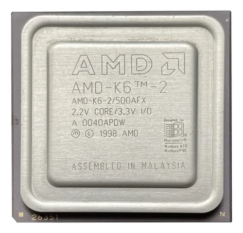
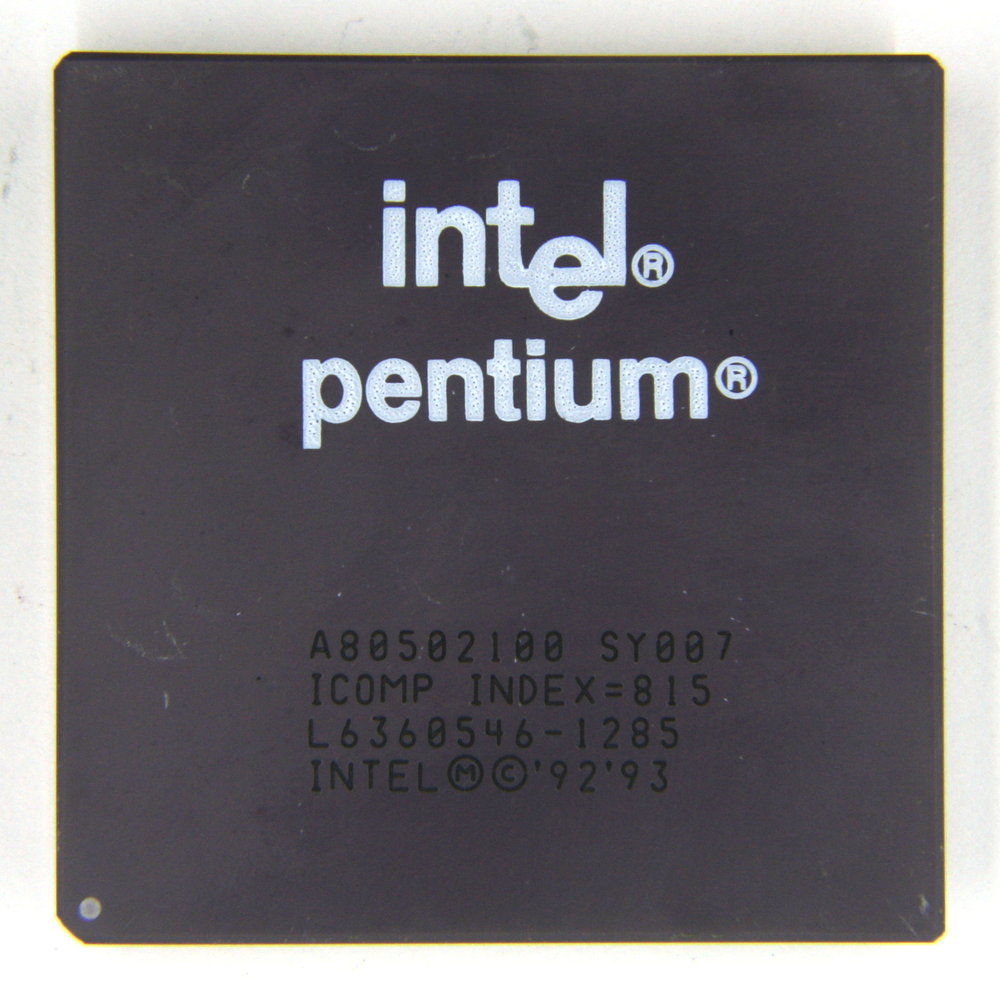
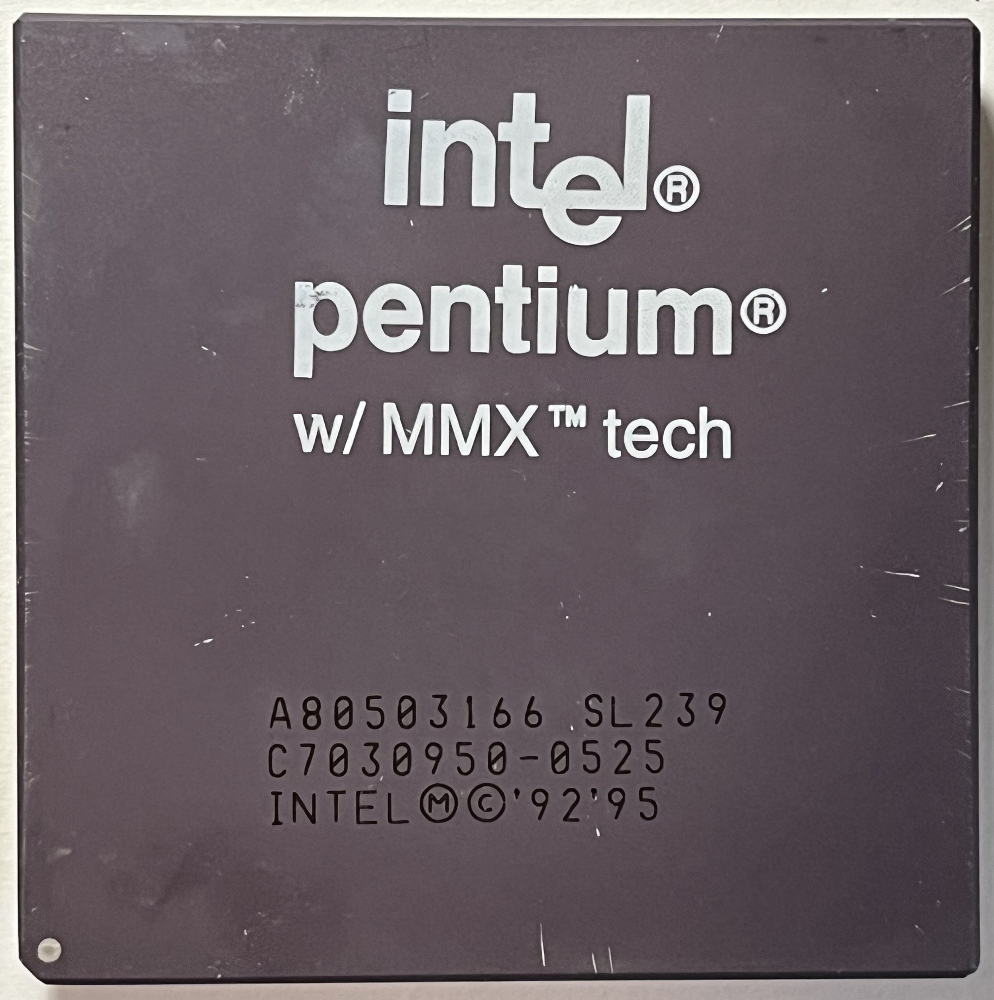
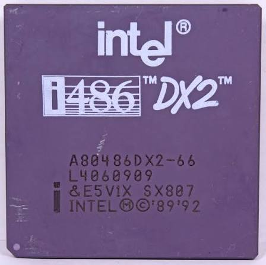
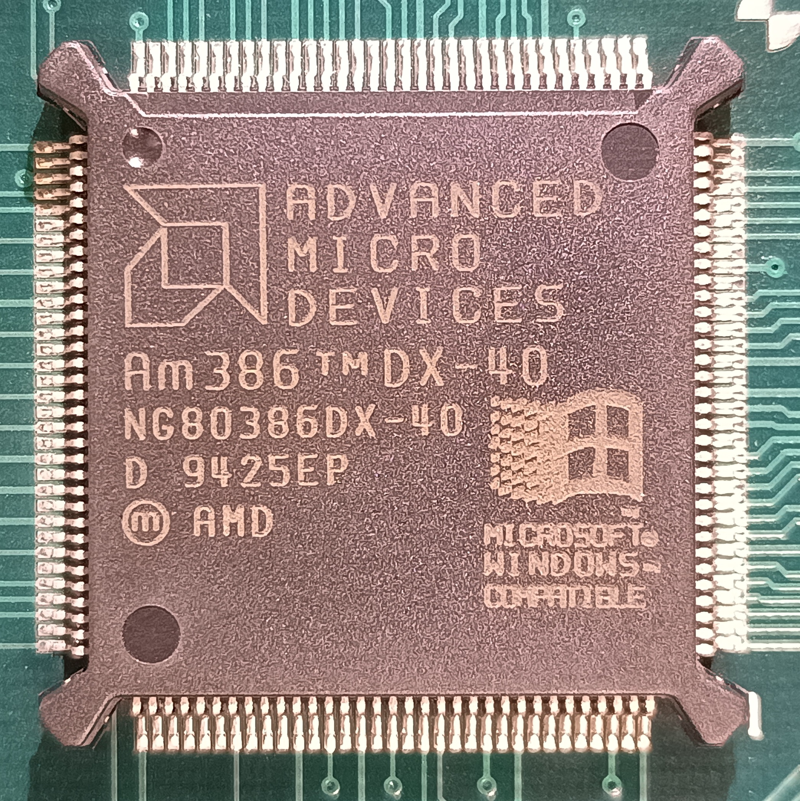

Arquitetura e Hardware
A estação reúne computadores de diferentes gerações x86. A sequência organizada até 23.0.1 preserva o foco em Win32 e em máquinas antigas, enquanto as versões posteriores acrescentam módulos científicos e interfaces que podem exigir perfis de uso adequados ao hardware.
x86arquitetura de referência
i386 / i486 / i586famílias antigas consideradas
640 × 480resolução de referência para telas antigas
Computador central
| Componente | Descrição técnica |
|---|---|
| Processador | AMD K6-2 500 MHz (Socket 7) |
| Placa-mãe | PCChips M571 (Chipset SiS 5598) |
| Memória | 256 MB DIMM |
| Placa de captura | Em construção |
| Armazenamento | HD IDE de 40 GB (com previsão de Compact Flash) + HD IDE de 80 GB |
| Rede | Realtek RTL8139D - PCI |

Nó Escravo “João Paulo II”
| Componente | Descrição técnica |
|---|---|
| Processador | Intel Pentium 100 MHz (Socket 7) |
| Placa-mãe | PCChips M537 (Chipset VIA Apollo VP1) |
| Memória | 64 MB EDO SIMM - 72 pinos |
| Placa de captura | Em construção |
| Armazenamento | HD IDE de 40 GB (com previsão de Compact Flash) |
| Rede | Realtek RTL8139D - PCI |

Nó Escravo “Pio XII”
| Componente | Descrição técnica |
|---|---|
| Processador | Intel Pentium 133 MHz (Socket 7) |
| Placa-mãe | PCChips M520 (Chipset Intel 430VX) |
| Memória | 64 MB EDO SIMM - 72 pinos |
| Placa de captura | Em construção |
| Armazenamento | HD IDE de 40 GB (com previsão de Compact Flash) |
| Rede | Realtek RTL8139D - PCI |
Nó Escravo “Leão XIII”
| Componente | Descrição técnica |
|---|---|
| Processador | Pentium MMX 166 MHz (Socket 7), com previsão de Pentium MMX 233 MHz |
| Placa-mãe | PCChips M572 (Chipset Intel 430TX) |
| Memória | 64 MB EDO SIMM - 72 pinos |
| Placa de captura | Em construção |
| Armazenamento | HD IDE de 40 GB (com previsão de Compact Flash) |
| Rede | Realtek RTL8139D - PCI |

Nó Escravo “Paulo”
| Componente | Descrição técnica |
|---|---|
| Processador | Intel i486 DX2 66 MHz (Socket 3) |
| Placa-mãe | PCChips M912 (Chipset UMC - UM8498F) |
| Memória | 16 MB EDO SIMM - 72 pinos |
| Placa de captura | Em construção |
| Armazenamento | HD IDE de 3 GB (com previsão de Compact Flash) |
| Rede | UMC UM9008F - ISA |

Nó Escravo “Petros”
| Componente | Descrição técnica |
|---|---|
| Processador | AMD Am386 DX-40 MHz (PGA132) |
| Placa-mãe | TK-82C491 (UMC - UM82C491F) |
| Memória | 8 MB EDO SIMM - 30 pinos |
| Placa de captura | Em construção |
| Armazenamento | Em construção |
| Rede | UMC UM9008F - ISA |

Compatibilidade e alvo de compilação nas fontes organizadas
| Aspecto | O que as fontes recentes demonstram |
|---|---|
| Alvo Win32 | O fonte define WINVER e _WIN32_WINNT como 0x0500, correspondente ao alvo de API do Windows 2000. |
| Sistemas antigos | O código ainda contém identificação de Windows 95/98/ME e NT 4.0, além de lógica de interface para telas pequenas, mas o fonte isolado não comprova execução estável em cada um desses sistemas. |
| Telas legadas | O layout considera desde 640 × 480 e adiciona barras de rolagem quando a área disponível é menor que o tamanho de referência da janela. |
| Compilador legado | O próprio fonte declara compatibilidade de código com Dev-C++ 4.9.9.2 / MinGW 3.4.2 e Windows 2000. |
| Robustez 3.5.4 | A 3.5.4 adiciona wrappers limitados para strings/formatação e evita algumas dependências frágeis do CRT antigo, sem abandonar o alvo legado. |
Perfis introduzidos em 4.1.1: a camada científica oferece perfis 386/486, Pentium, K6 e Fast para ajustar recursos como PFB, MFS, w-stacking, iterações de CLEAN e tamanho do cubo às limitações da máquina. As versões posteriores reorganizam módulos e interfaces sem apagar essa evolução.